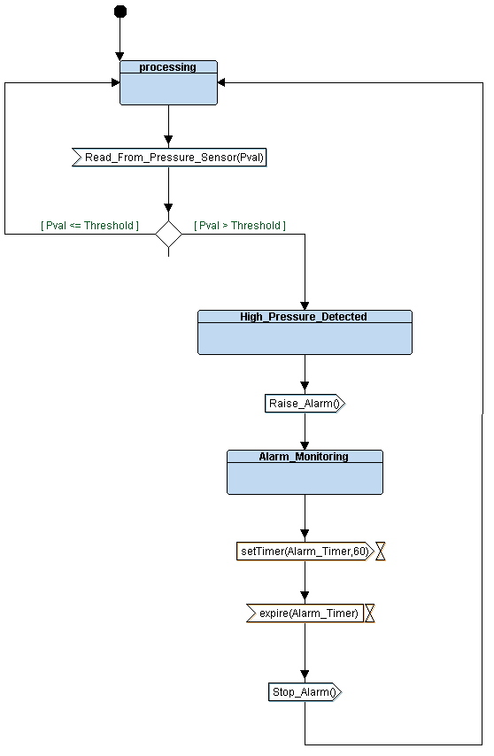

TTool project:
High_Pressure_Monitoring.xml
Requirements
AVATARRD
Analysis
UseCaseDiagram 0

ActivityDiagram 0
ScenarioFromUCD0
Design
Block Diagram
Behavior of Block: Pressure_Sensor_Driver
Behavior of Block: Main_System_Algorithm

Behavior of Block: Alarm_Actuator_Driver